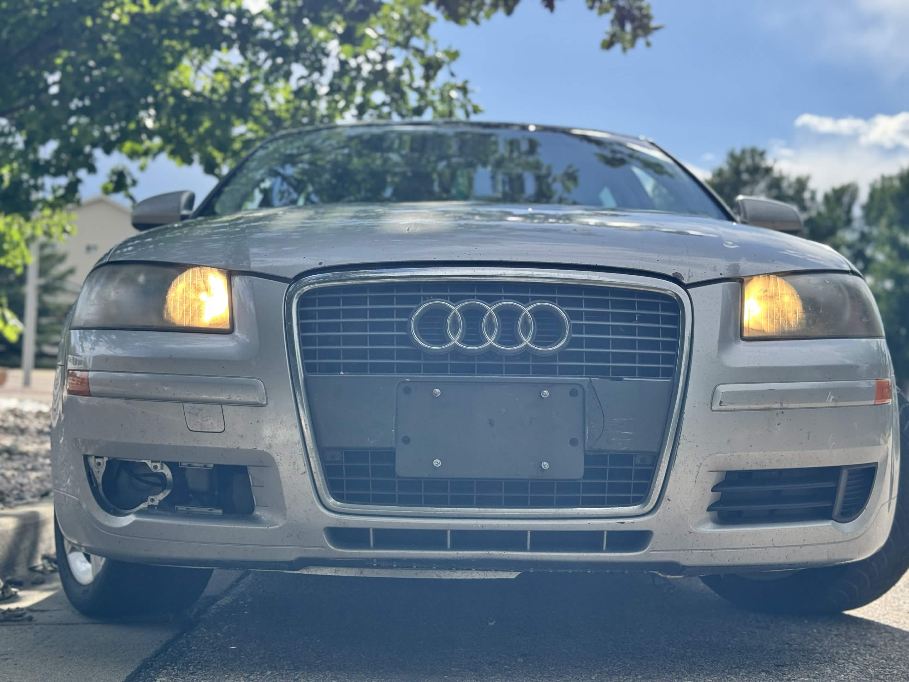
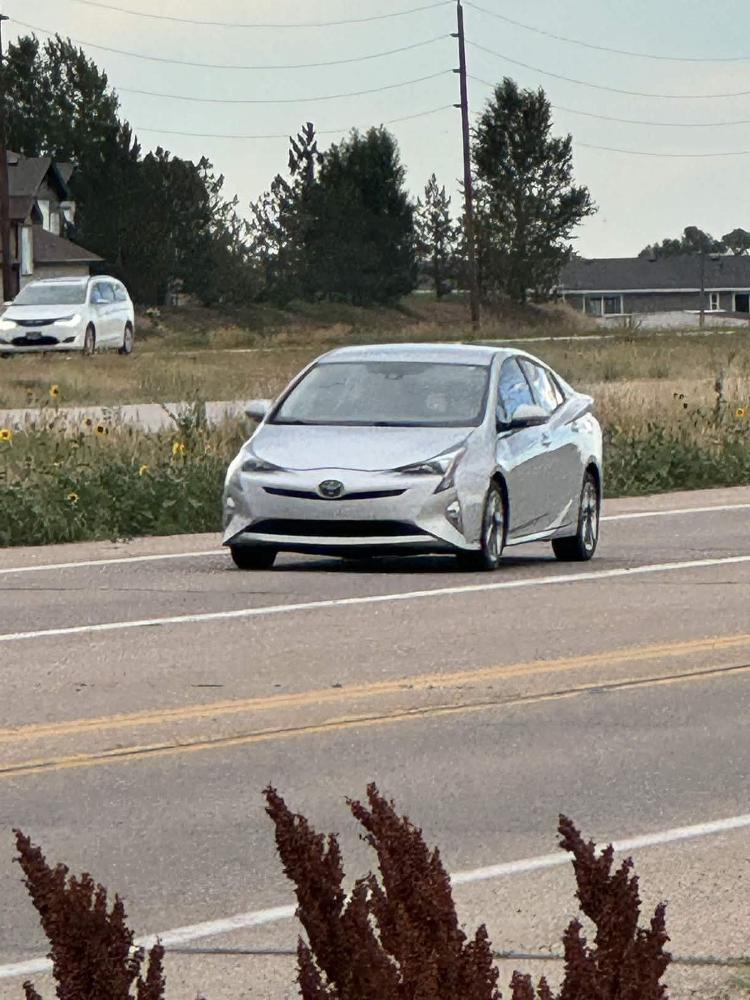
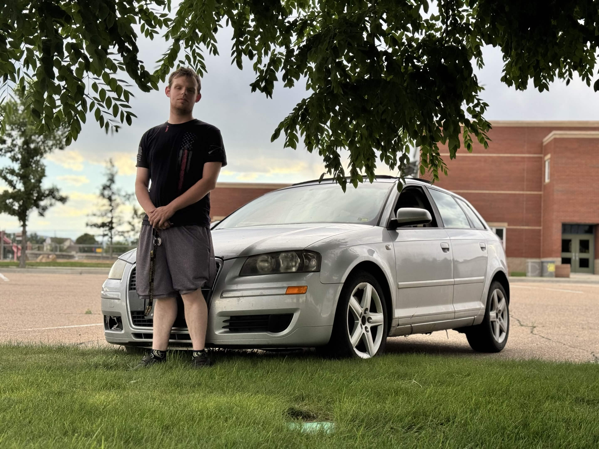

In Loving Memory
We gather here today, in this digital realm of remembrance, to honor the 2007 Audi A3—a vehicle that transcended the mere definition of transportation and became a symbol of German engineering excellence, automotive passion, and the unbreakable bond between man and machine. With its sleek, aerodynamic design that cut through the wind like a blade, its powerful turbocharged heart that beat with the rhythm of pure performance, and its unwavering reliability that defied the very concept of mechanical limitations, this magnificent creation left an indelible, permanent mark on the automotive world that will echo through eternity.
This particular A3, a singular specimen of automotive artistry, served with unyielding loyalty and dedication under the ownership of Carter Crouch—a driver whose relationship with the accelerator pedal could only be described as... enthusiastic. This noble machine, forged in the fires of Ingolstadt's finest engineering, was pushed to the absolute limits of its capabilities, responding to every command from that fateful right foot with the unwavering dedication of a loyal steed. Day after day, mile after mile, it answered the call, delivering power on demand, torque at the ready, and performance that would make lesser vehicles weep with inadequacy.
Despite its robust engineering, its meticulously crafted internals, and its German precision that could split atoms, the constant, unrelenting demand for maximum performance—the endless pursuit of redline, the perpetual quest for acceleration, the ceaseless hunger for speed—ultimately led to its untimely, catastrophic demise. In a final, dramatic act of mechanical martyrdom, the engine gave its last breath in a spectacular display of automotive sacrifice, marking the end of an era that will never be forgotten.
From the precision of its automatic DSG transmission that shifted gears with the speed of thought, to the elegance of its interior craftsmanship where every stitch was a testament to human artistry, this 2007 A3 represented the perfect fusion of sport and sophistication, engineering and emotion, power and poetry. It was driven hard, yes—perhaps too hard for its own good—but it was driven with passion, with purpose, and with the kind of love that only a true automotive enthusiast can understand.
A Life Well-Lived: The Timeline
The Birth of a Legend
Born in the hallowed halls of Audi's Ingolstadt factory, this A3 emerged from the production line as a perfect specimen of German engineering. Every component was meticulously assembled, every system tested, every detail perfected. It was ready to take on the world.
The Golden Years
For over a decade, this A3 served various owners, accumulating miles and memories. It weathered storms, navigated highways, conquered city streets, and proved itself time and again as a reliable companion on life's journey.
A New Chapter Begins
Enter Carter Crouch. A new owner with a vision, a dream, and an accelerator pedal that would become the vehicle's greatest challenge and ultimate destiny. The relationship began with promise and excitement.
The Performance Era
Four years of pure, unadulterated performance. Every drive was a test, every acceleration a challenge, every redline a victory. The turbocharger worked overtime, the transmission shifted with urgency, the engine sang its mechanical song of power. The gas pedal became a constant companion, rarely seeing rest.
The Final Journey
In a moment that will be forever etched in automotive history, the engine reached its breaking point. After years of giving everything it had, responding to every demand, pushing every boundary, it could give no more. In a spectacular, catastrophic failure, the 2007 Audi A3 breathed its last, leaving behind a legacy of performance, passion, and the price of pushing limits.
Technical Legacy: The Complete Specifications
Engine & Performance
Engine: 2.0L TFSI Turbocharged Inline-4
Power: 200 HP @ 5,100-6,000 RPM
Torque: 207 lb-ft @ 1,800-5,000 RPM
Compression Ratio: 10.5:1
Fuel System: Direct Injection
0-60 mph: 6.7 seconds
Top Speed: 130 mph (electronically limited)
Transmission
Type: 6-Speed DSG Automatic
Technology: Dual-Clutch Technology
Shift Speed: Lightning-fast gear changes
Modes: Drive, Sport, Manual
Paddle Shifters: Available
Final Drive: Front-wheel drive configuration
Drivetrain & Chassis
Layout: Front-engine, Front-wheel drive
Quattro AWD: Available on select models
Suspension: MacPherson strut front, multi-link rear
Brakes: Ventilated disc front, solid disc rear
Steering: Power-assisted rack-and-pinion
Turning Circle: 36.1 feet
Design & Dimensions
Body Style: 5-door Sportback
Length: 168.7 inches
Width: 69.2 inches
Height: 55.7 inches
Wheelbase: 101.5 inches
Curb Weight: 3,197 lbs
Interior: Premium leather, aluminum accents
Fuel & Efficiency
Fuel Type: Premium Unleaded (91+ octane)
Fuel Capacity: 14.5 gallons
City MPG: 22 mpg
Highway MPG: 28 mpg
Combined MPG: 24 mpg
Range: ~348 miles (theoretical)
Technology & Features
Infotainment: MMI Navigation Plus
Audio: Premium sound system
Safety: ABS, ESP, multiple airbags
Comfort: Dual-zone climate control
Lights: Xenon headlights with LED accents
Wheels: 17-inch alloy wheels standard
The Final Moments: A Detailed Account
The Incident
On that fateful day, the 2007 Audi A3 embarked on what would become its final journey. The engine, having served faithfully through countless accelerations, innumerable redline encounters, and years of enthusiastic driving, had reached a critical point. The turbocharger, once a source of endless power, had been pushed beyond its designed parameters. The pistons, forged from the finest materials, had endured stress that would make lesser engines crumble. The connecting rods, the very bones of the engine, had flexed and strained under the constant demand for performance.
The Warning Signs
In the days leading up to the catastrophic failure, subtle signs began to emerge—signs that, in retrospect, told the story of a machine giving its all. The engine note, once crisp and clear, began to carry a hint of strain. The turbo spool, once instantaneous, showed moments of hesitation. The oil temperature, monitored by sensors designed to protect, began to climb higher than normal. These were the whispers of a machine approaching its limits, the final breaths before the storm.
The Catastrophic Failure
Then it happened. In a moment that would define the end of an era, the engine reached its breaking point. The stress, accumulated over years of enthusiastic driving, finally exceeded the material's ability to endure. With a sound that will forever echo in the memory of those who witnessed it—a combination of mechanical agony and final release—the engine gave way. Metal met metal in ways it was never meant to. Components that had worked in perfect harmony for years suddenly found themselves in catastrophic conflict.
The Aftermath
The aftermath was both tragic and beautiful in its finality. The 2007 Audi A3, having given everything it had, could give no more. The engine, once a source of power and pride, had become a monument to the price of pushing boundaries. The vehicle, once a symbol of performance and possibility, had become a testament to the limits of mechanical endurance. But in its final moments, it had proven something profound: that even in failure, there is honor. That even in destruction, there is legacy. That even in the end, there is meaning.
Cause of Death: Catastrophic engine failure due to prolonged high-performance operation and enthusiastic gas pedal usage by owner Carter Crouch. The vehicle gave its life in service of performance, passion, and the pursuit of automotive excellence.
Memories & Moments
🚗 The First Drive
The moment when Carter first pressed the accelerator and felt the turbo spool up, the transmission shift, the power deliver. It was love at first acceleration.
🏁 The Highway Runs
Countless highway journeys where the A3 proved its mettle, merging with confidence, passing with authority, and cruising with the kind of stability that only German engineering can provide.
🌧️ The Storm Navigator
Through rain, through wind, through conditions that would make other vehicles hesitate, the A3 pressed on, its traction control working in harmony with its driver's confidence.
🌙 The Night Drives
Those late-night drives where the xenon headlights cut through darkness like lasers, the interior illuminated by the soft glow of premium instrumentation, creating moments of pure automotive poetry.
🎵 The Soundtrack
The premium sound system that filled the cabin with music, the engine note that provided its own soundtrack, the symphony of mechanical and musical harmony that defined every journey.
⚡ The Acceleration
That feeling—that indescribable, addictive feeling—of the turbo kicking in, the transmission downshifting, the world blurring past as the A3 transformed into a blur of German engineering excellence.
Visual Memories: A Gallery of Excellence
Captured moments that immortalize the beauty, power, and legacy of the 2007 Audi A3.



Final Moments: A Moving Tribute
A final glimpse into the life and legacy of this remarkable machine.
Impact & Legacy
The Impact on Automotive Culture
The 2007 Audi A3 wasn't just a car—it was a statement. It represented a shift in the automotive landscape, proving that luxury, performance, and practicality could coexist in a single, beautifully designed package. It showed the world that German engineering wasn't just about precision—it was about passion, about pushing boundaries, about creating machines that didn't just transport bodies, but moved souls.
The Personal Impact
For Carter Crouch, this A3 was more than transportation—it was a companion, a challenge, a canvas for automotive expression. Every drive was an opportunity to explore the limits of performance, to feel the connection between human intention and mechanical response, to experience the pure joy of automotive excellence. The relationship between driver and machine was one of mutual respect, mutual challenge, and ultimately, mutual sacrifice.
The Legacy
The legacy of this 2007 Audi A3 extends far beyond its physical existence. It lives on in the memories of those who experienced its performance, in the stories told about its capabilities, in the lessons learned about the price of pushing limits. It serves as a reminder that all things, no matter how well-engineered, have limits. That passion, while beautiful, comes with consequences. That sometimes, the greatest tribute to a machine is to push it until it can be pushed no more.
The Lessons
From this experience, we learn that engineering excellence, while remarkable, is not infinite. That maintenance matters, that respect for mechanical limits is not weakness but wisdom. But we also learn that passion, when genuine, is worth the risk. That pushing boundaries, while dangerous, is how we discover what's truly possible. That sometimes, the most meaningful relationships are the ones that end in spectacular failure rather than quiet decline.
Audi A3 Driving Simulator
Experience the power, feel the performance, push the limits. But remember—even virtual engines have their breaking point.
Memorial Calculator
Forever in Our Hearts
"This 2007 Audi A3 wasn't just a car—it was a testament to pushing boundaries, a monument to the pursuit of performance, a symbol of what happens when engineering meets passion and passion meets its limits. It gave everything it had, responding to every command from the gas pedal with unwavering dedication, delivering power on demand, torque at the ready, performance that defied expectations. It pushed through every challenge, answered every call, exceeded every reasonable expectation, until it could give no more. In its final moments, it taught us that even machines have limits, that even engineering has boundaries, and that sometimes, the greatest tribute to excellence is to push it until it breaks. Rest in peace, brave warrior of the asphalt, noble steed of the highway, mechanical martyr of the open road. Your legacy lives on in every turbo spool, every gear shift, every moment of automotive passion. You will never be forgotten."
— Carter Crouch, Owner, Enthusiast, and Perpetual Gas Pedal Enthusiast
Philosophical Reflections
The Nature of Mechanical Life
In contemplating the life and death of this 2007 Audi A3, we are forced to confront profound questions about the nature of existence itself. What is the purpose of a machine? Is it to serve quietly and reliably, to exist in the background of human experience? Or is it to push boundaries, to explore limits, to live a life of intensity and passion, even if that life is shorter?
The Paradox of Performance
Here lies a fundamental paradox: the very qualities that made this A3 exceptional—its power, its responsiveness, its ability to deliver performance on demand—were the same qualities that led to its demise. The turbocharger that provided thrilling acceleration also created the stress that would ultimately destroy the engine. The transmission that shifted with lightning speed also endured the wear that would contribute to its failure. The gas pedal that was its greatest joy was also its greatest enemy.
The Meaning of Sacrifice
In its final moments, this A3 made the ultimate sacrifice: it gave its mechanical life in service of human passion. It didn't fail quietly in a garage, unused and unloved. It failed spectacularly, in the act of doing what it was built to do—delivering performance, responding to demand, pushing boundaries. There is honor in that. There is meaning in that. There is a kind of beauty in that catastrophic, final act of mechanical martyrdom.
The Legacy of Limits
This memorial serves as a reminder that all things have limits—machines, relationships, passions, lives. But it also serves as a reminder that sometimes, the most meaningful existence is not the longest, but the most intense. That sometimes, the greatest tribute to excellence is not preservation, but utilization. That sometimes, the most beautiful ending is not quiet decline, but spectacular failure in the pursuit of greatness.